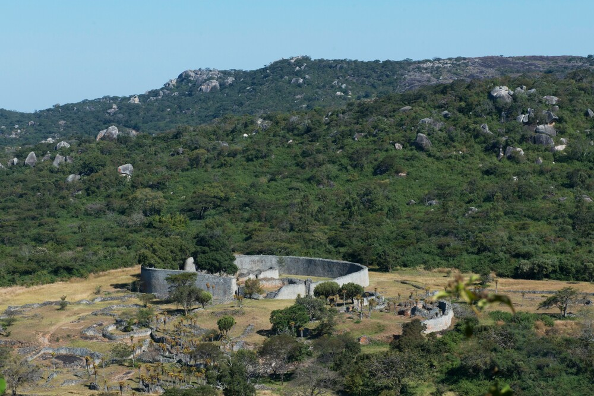

About Me
My name is Munyaradzi Chiondegwa, and I go by Munya. I'm a member of the Deaf Community, originally from and currently residing in Zimbabwe, Southern Africa. I hold a Bachelor's degree in Accounting and an MBA from Zimbabwe Open University. Currently, I'm pursuing my passion for software development as a student at BYU-Idaho through the Pathway Program. My studies focus on dynamic web technologies, responsive design, and crafting interactive web experiences. I'm deeply interested in collaborating with other developers on a project that I'm very passionate about: creating software that facilitates communication between the Deaf and hearing communities. This software would ideally be able to convert sign language to written or spoken language, and vice versa. I believe this would be a significant contribution to accessibility and inclusivity.

Zimbabwe
Zimbabwe is a landlocked country in Southern Africa, renowned for its stunning landscapes, diverse wildlife, and the iconic Victoria Falls, a UNESCO World Heritage site. With a rich cultural heritage marked by over 16 ethnic groups, the nation boasts a vibrant arts scene and historical landmarks like the Great Zimbabwe ruins. Its economy is driven by agriculture, mining, and tourism, despite facing challenges such as economic instability and political issues. Overall, Zimbabwe's natural beauty and cultural richness make it a compelling destination for travelers and a significant part of African history.
